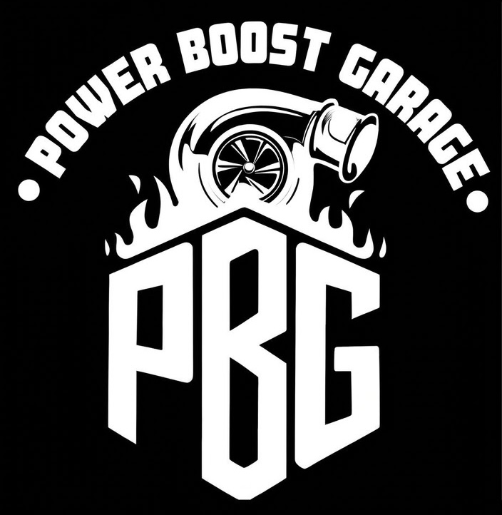

Activación de modos ocultos
Habilitación de funciones disponibles en modelos Volkswagen, Audi y CUPRA compatibles.

Nuestro servicio principal es la activación de modos y funciones ocultas en vehículos Volkswagen, Audi y CUPRA compatibles.
Visitar Power Boost Garage Volver al inicioHabilitamos funciones que vienen integradas en distintos modelos del grupo Volkswagen. La disponibilidad depende del modelo, año y equipamiento de cada vehículo.
Habilitación de funciones disponibles en modelos Volkswagen, Audi y CUPRA compatibles.
Atención enfocada en vehículos de estas marcas. Las funciones disponibles varían según la versión y el equipamiento.
Servicios complementarios para conocer las capacidades del vehículo y adaptar la experiencia a cada propietario.
Consulta los detalles del servicio y pregunta por la compatibilidad de tu vehículo en el sitio de Power Boost Garage.
Ir a powerboostgarage.lat Volver al inicio